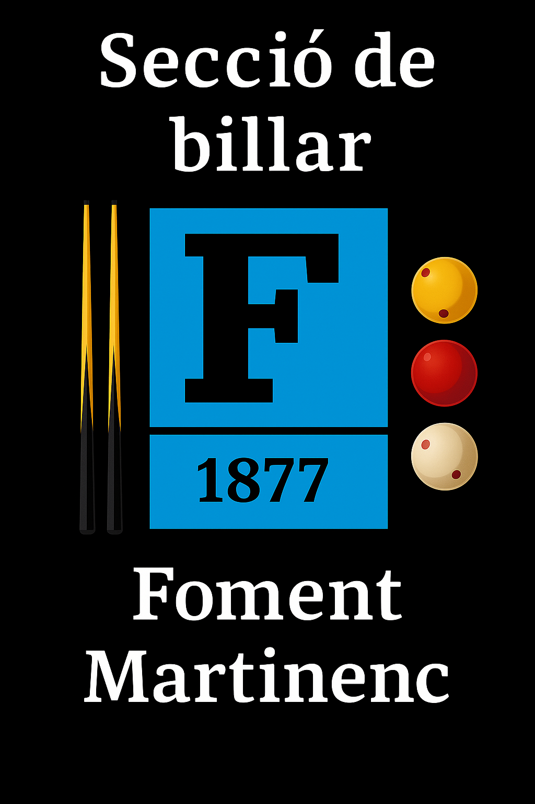

La partida acaba en arribar a la distància o al màxim de 50 entrades.
50 entradesEl jugador amb bola groga tanca l'entrada i té dret a contrasortida per empatar.
Dret a empatConsulta la graella que facilitarà la Junta per cada partida.